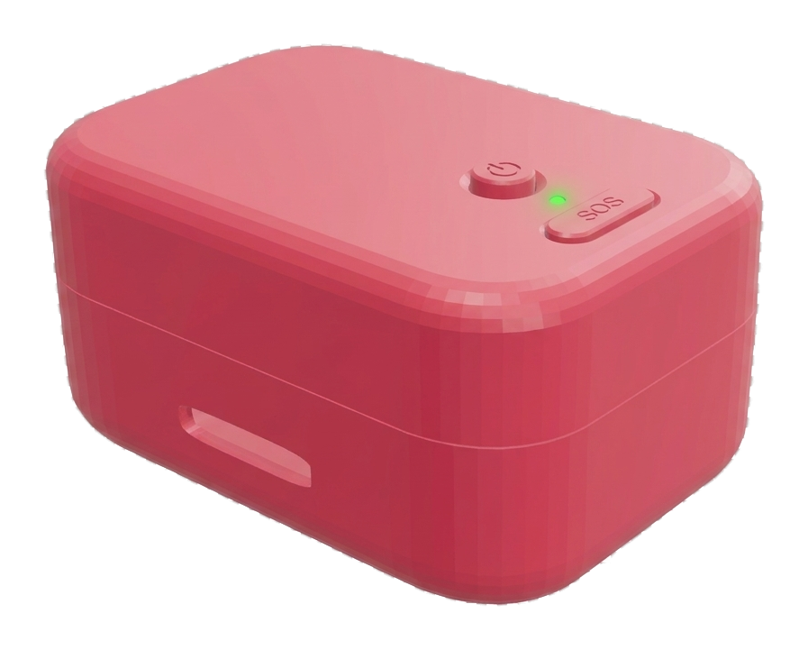

Colócalo en la prenda
Sujeta Sentinel a cualquier prenda: camisa, chaleco, cinturón o abrigo. Es ligero y discreto.
Sentinel es un pequeño sensor que se coloca en cualquier prenda y avisa de inmediato al celular de tu familia si un adulto mayor sufre una caída, para que puedan auxiliarlo a tiempo.

*Valores referenciales. Ajústalos con los datos reales de tu prototipo.
Las caídas son una de las principales causas de lesiones en adultos mayores. Muchas veces ocurren cuando están solos y pasan minutos u horas antes de que alguien lo note.
Sentinel cierra esa brecha: detecta la caída en el momento y avisa a quien puede ayudar, sin que el adulto mayor tenga que presionar nada ni usar un celular.

Tres pasos y tu familia estará siempre informada.
Sujeta Sentinel a cualquier prenda: camisa, chaleco, cinturón o abrigo. Es ligero y discreto.
Sus sensores de movimiento identifican un golpe o caída brusca y la diferencian de la actividad diaria.
Envía una alerta inmediata al celular del familiar o cuidador para que pueda auxiliar sin demora.
Pulsa el botón para ver cómo se envía la alerta.
Todo lo necesario para la tranquilidad de la familia.
Un solo dispositivo que se adapta a la ropa de todos los días, sin cambiar hábitos ni complicar la rutina.
Notificación al instante en el celular del familiar, avisando que se necesita ayuda.
Bluetooth para cercanía y WiFi para enviar la alerta por internet.
Diseñado para funcionar durante días con una sola carga y sin preocupaciones.
Tamaño reducido y cómodo, para que el adulto mayor lo olvide mientras lo lleva puesto.
La información viaja cifrada y solo la reciben las personas que tú autorices.
Arrastra para rotar y usa la rueda del mouse (o pellizca en el celular) para acercar.
Formato recomendado: .glb (puedes exportarlo desde Blender, Fusion 360, etc.).
Sentinel combina dos tecnologías para que la alerta llegue sin importar dónde estés:
Imágenes del dispositivo y de su uso diario.


Mayor independencia y seguridad en casa y fuera de ella.
Saben al instante si algo ocurre, aunque vivan lejos.
Atención oportuna para actuar rápido cuando más se necesita.
Todo lo que necesitas saber del dispositivo de un vistazo. Reemplaza estos valores por los datos reales de tu prototipo.
Pedir más detalles| Sensor | Acelerómetro / giroscopio (IMU) |
|---|---|
| Conectividad | WiFi 2.4 GHz · Bluetooth 5.0 |
| Notificaciones | App móvil (Android / iOS) |
| Batería | Recargable (USB-C) |
| Autonomía | Por definir |
| Dimensiones | Por definir |
| Peso | Por definir |
| Instalación | Clip / adhesivo textil |
En cualquier prenda: camisas, chalecos, chaquetas, cinturones o pantalones. Se sujeta de forma sencilla y segura.
Recibes una notificación inmediata en tu celular indicando que se detectó una caída y que se necesita ayuda.
Sí. Sentinel se conecta por WiFi a internet, por lo que la alerta puede llegar a tu celular desde cualquier lugar donde tengas conexión.
No. El dispositivo trabaja solo; no hay botones que presionar ni pantallas que manejar.
Su batería está pensada para durar varios días. Indica aquí la autonomía real de tu prototipo.
La información se envía cifrada y solo la reciben las personas autorizadas por la familia.
Déjanos tus datos y te contactaremos con toda la información del producto.